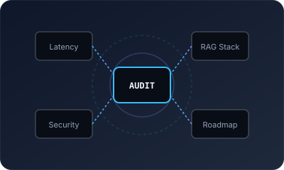

AI Architecture Assessment
Contact for Pricing
Fixed-scope assessment, risk audit & roadmap
Provide your existing architecture, product specification, or technical bottleneck. Receive a comprehensive written review, risk analysis, and concrete implementation roadmap.
Included Deliverables
- Current architecture & bottleneck assessment
- LLM & foundation model selection recommendations
- Agent orchestration & tool-calling architecture
- RAG pipeline & retrieval accuracy assessment
- Security, access-control & data boundary review
- Scalability, concurrency & latency optimization
- Token & infrastructure cost optimization
- Evaluation & production observability strategy
- Phased implementation roadmap + 60-minute live review